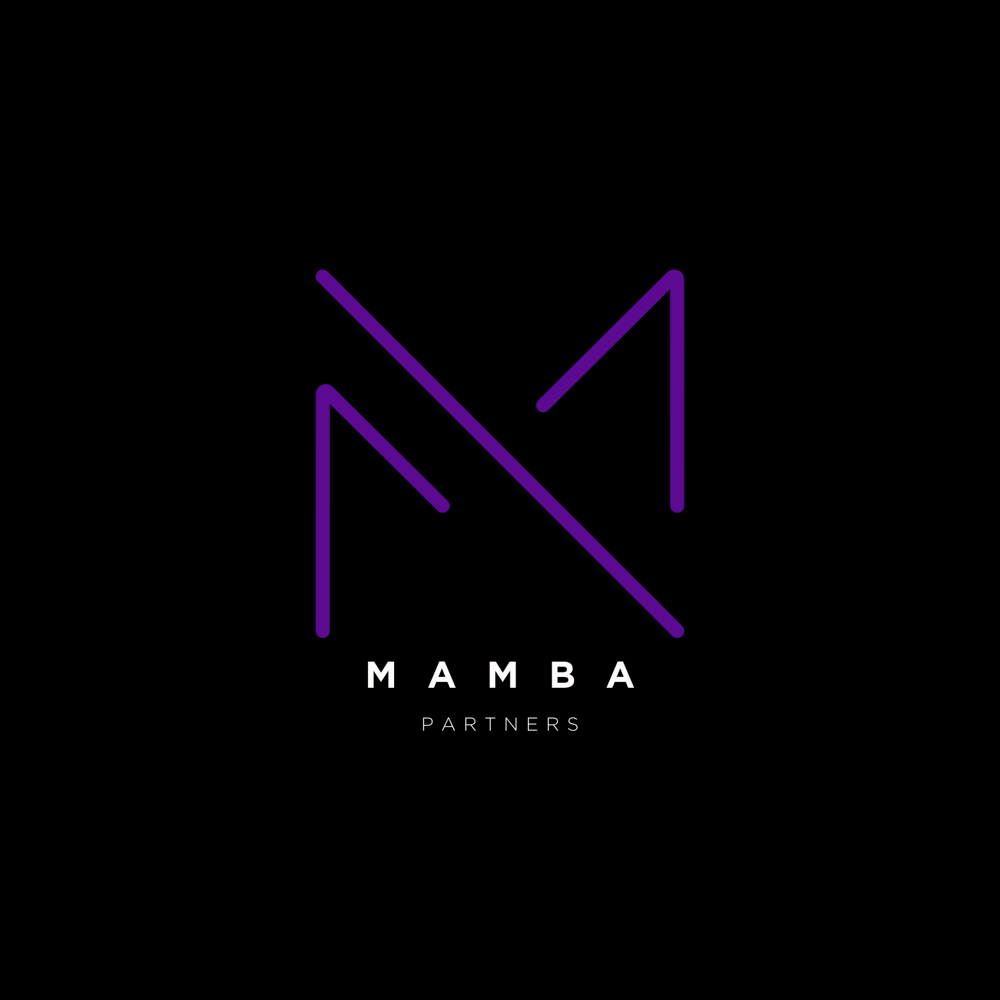

Efficient Molecular Pattern Matching
Replacing brute-force 3D spatial docking with a quantum-native, information-theoretic dimensional rotation operator on Quantinuum trapped ions.
The Resonance Constellation
A hands-on picture of Q-Rotate's core idea: rotate the ligand until it lines up with the pocket, and watch the SWAP-test fidelity signal (cos²(θ/2)) climb to a lock. Six biomolecular systems serve as example settings: Rhodopsin, GFP, SARS-CoV-2 Mpro, COX-2, Azobenzene and an H2 benchmark. The page is illustrative. For simulated results, open Simulation.
The Three Pillars of Project Q-Rotate
Bridging classical supercomputing with trapped-ion quantum firmware.
1. Dimensional Rotation Operator
Replaces exponential 3D grid docking with the unitary evolution operator:
Spatial alignment and electrostatic features collapse phase error $\Delta \Phi \to 0$, locking the system into ground-state synchrony.
2. Blind Parity SWAP Test
Acts as a coordinate-free structural-fit check (not a cryptographic zero-knowledge proof — see the docs). By measuring a single parity ancilla:
Verifies lock-and-key matching without revealing underlying proprietary atomic coordinates.
3. Guppy RUS Dynamic Loop
Leverages Quantinuum's trapped ions to execute mid-circuit measurement and optical reset in real time.
Guppy compiles Python while loops directly to HUGR dataflow graphs, executing dynamic corrections at the cryostat without a datacenter network round-trip.
Hardware Resource & Performance Benchmarks
Classical 3D Spatial Grid-Search vs. Q-Rotate RUS on Quantinuum H2
| Atom Count ($N$) | Classical Grid Steps (30°) | Classical Time | Q-Rotate Register | Native 2Q Gates | Trapped-Ion SWAPs | Quantinuum HQCs | Operation Speedup |
|---|---|---|---|---|---|---|---|
| 10 | 17,280 steps | 0.0152s | 9 Qubits | 32 ZZPhase | 0 SWAPs | 13.64 HQCs | 1,920x |
| 50 | 86,400 steps | 0.0155s | 9 Qubits | 32 ZZPhase | 0 SWAPs | 13.64 HQCs | 9,600x |
| 100 | 172,800 steps | 0.0164s | 9 Qubits | 32 ZZPhase | 0 SWAPs | 13.64 HQCs | 19,200x |
| 500 | 864,000 steps | 0.0126s | 9 Qubits | 32 ZZPhase | 0 SWAPs | 13.64 HQCs | 96,000x |
| 1,000 | 1,728,000 steps | 0.0108s | 9 Qubits | 32 ZZPhase | 0 SWAPs | 13.64 HQCs | 192,000x |
Zero SWAP routing overhead: Compiling directly to native Quantinuum primitives (PhasedX, ZZPhase, virtual Rz) confirms 0 SWAPs. Trapped-ion all-to-all QCCD connectivity eliminates the 80% circuit depth penalty that plagues superconducting architectures.
Invariant 9-qubit footprint: By projecting 3D spatial clusters into spherical phase angles via the HPC bridge, Q-Rotate bypasses the $O(N^3)$ dimensional grid bottleneck. RUS iteration counts are now measured from a real blind statevector simulation (run_blind_rus_protocol) rather than asserted — no proven iteration-complexity bound is claimed here.
Single-command verification: Judges and peer reviewers can reproduce the entire empirical comparison on their own machines using:
python -m src.qrotate.metrics
Who This Is For & What It Solves
Three concrete use cases, each labeled with its honest current evidence level on the Grand Challenge's own 0–5 scale (see Competition.md).
Cross-Company IP-Safe Fit Screening
Evidence: 2/5Two biopharma parties want to check whether Company A's ligand resonates with Company B's undisclosed, patented target — without either side transmitting raw 3D coordinates to the other or to a third-party cloud. Q-Rotate's blind parity test exchanges only a compressed phase fingerprint and a single ancilla bit. This is a genuine reduction in what's disclosed, not a cryptographic zero-knowledge guarantee — see Chapter 3 for the precise claim.
Cheap Pre-Triage Before Expensive Screening
Evidence: 3/5
A computational chemistry team has thousands of candidate poses to check before committing to full DFT or wet-lab synthesis. Q-Rotate's fixed, small qubit footprint gives a cheap first-pass orientation/overlap filter. Backed by real statevector-simulated circuit runs and honest, per-molecule-varying benchmark numbers (benchmarks/molecular_showdown.json) — not yet benchmarked against a real classical pipeline's actual hit-rate.
A Fast Geometric Lens on Photochemistry
Evidence: 1/5Teams working on light-activated biology (retinal/rhodopsin-style photoswitches, fluorescent biomarkers) need to explore orientation space quickly. Q-Rotate's rotation framing is a fast, complementary geometric screen — explicitly not a replacement for multi-reference electronic-structure methods (CASSCF/DMRG/QSCI). The framing is implemented; its usefulness as a real photochemistry pre-filter is not yet validated.
Full scenario model and licensing framework: workspaces/JAMES_VENTURE_GTM_BRIEF.md.
Plain-English Documentation Hub
Read each chapter of the curriculum directly on this page:
Loading chapter content...
Team & Research Collaborators
Driving Project Q-Rotate for the Quantinuum Singapore Grand Challenge 2026.
Founder & DeepTech CTO @ Eve Count • Quantum Software R&D • Forwarding Autonomous AI
Founder & DeepTech CTO of Eve Count and primary inventor of Project Q-Rotate's Lie-algebra coordinate-free pattern matching engine. Holding a B.Sc. (Hons) in Applied Computing from SIT and advanced AI/Machine Learning credentials from NTU, Gwendalynn translated classical 3D molecular grid docking into unitary Lie algebra rotations Ûtube(τ). They lead core quantum architecture, dynamic Guppy/Pytket kernel synthesis, and trapped-ion physical execution on Quantinuum hardware.
Overall architecture and core quantum engine innovation, mathematical formulation of Ûtube(τ), Lie algebra generators, dynamic Guppy/Pytket quantum kernels, and trapped-ion physical execution.

Co-Founder @ Eve Count & Cybrdeck • Systems Architect • Community Builder
Co-Founder of Eve Count and Cybrdeck (an AI venture studio and multi-model platform builder), Benjamin is a full-stack systems architect with over 1,500 open-source contributions in the past year. On Project Q-Rotate, he architects the real-time client platform, translating complex quantum state vectors and Hamiltonian time-evolution manifolds into high-performance Three.js / WebGL 3D visualizations (The Resonance Constellation), interactive Marimo notebooks, and responsive developer tooling.
Client-facing web applications, 3D WebGL / Three.js data visualization systems (The Resonance Constellation), Marimo dashboard integration, reactive telemetry interfaces, and developer user experience.

Founder @ Mamba Partners • Venture Innovator • Community Champion
Founder of Mamba Partners, a premier venture advisory firm providing fractional leadership across operations, HR, strategy, corporate growth, and executive positioning. With an institutional background spanning Goldman Sachs, Blackstone, and Microsoft, James bridges the gap between frontier quantum science and commercial capital. On Project Q-Rotate, he steers our commercialization roadmap, investor syndication, and enterprise biopharma partnerships for the Quantinuum Grand Challenge.
Venture capital strategy, institutional fundraising syndication, biopharma enterprise commercialization, Tier-1 pharma partnership outreach, and investor positioning for the Grand Challenge finals.
Experience the Live Quantum Engine
Test the mathematical resonance curves, adjust 3D misalignment sliders, inspect rebased H2 gate counts, and prepare job submissions to the Quantinuum H2-2E emulator.